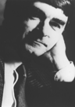
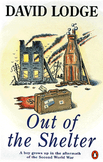

David Lodge

David Lodge
David Lodge was born in London in 1935. He was educated at University
College, London, where he took his BA degree in 1955 and his MA in 1959.
In between he did National Service in the British Army. He holds a doctorate
from the University of Birmingham, where he taught in the English Department
from 1960 until 1987, when he retired to become a full-time writer. He
retains the title of Honorary Professor of Modern English Literature at
Birmingham and continues to live in that city. He is a Fellow of the Royal
Society of Literature.
His novels include
The Picturegoers (1960);
Ginger, You're Barmy (1962);
The British Museum is Falling Down (1965);
Out of the Shelter (1970);
Changing Places (1975), for which
he was awarded both the Hawthornden Prize and the Yorkshire Post Fiction
Prize; How Far Can You Go?, which was Whitbread Book of the Year in 1980;
Small World, which was shortlisted for the Booker Prize in 1984; Nice Work,
which won the 1988 Sunday Express Book of the Year Award and was also shortlisted
for the Booker Prize;
Paradise News (1991) and
Therapy (1995).
His work has been translated into more than twenty languages and many of
his books are published by Penguin.
David Lodge has written several
books on literary
criticism, such as
Language of Fiction (1966),
The Novelist at the Crossroads (1971),
The Modes of Modern Writing (1977), Working
with Structuralism (1981) and After Bakhtin: Essays on Fiction and Criticism
(1990). He has also edited Modern Criticism and Theory (1988); Scenes of
Clerical Life for Penguin Classics; and Lucky Jim for Penguin Twentieth-Century
Classics. In addition Penguin have published Write On (1986), a collection
of occasional essays and The Art of Fiction (1992), a selection of articles
originally published in the Independent on Sunday.
Small World was adapted as a television serial in
1988 and he himself adapted Nice Work, which won the Royal Television Society's
Award for the best drama serial of 1989 and a Silver Nymph at the International
Television Festival in Monte Carlo in 1990. In 1994 he adapted Martin Chuzzlewit
for a six-part BBC serial. His first stage play, The Writing Game, was
produced at the Birmingham Repertory Theatre in 1990, and he adapted it
for Channel 4 in 1995.

Ginger, You're Barmy
When it isn't prison, it's hell.
Or that's the heartfelt belief of conscripts Jonathan
Browne and Mike 'Ginger' Brady. For this is the British Army in the days
of National Service, a grimy deposit of post-war cynicism. It consists
of one endless, shambling round of kit layout, square-bashing, shepherd's
pie 'made from real shepherds', P.T. and drill relieved by the occasional
lecture on firearms or V.D. Reckless, impulsive Mike and the more pragmatic
Jonathan adopt radically different attitudes to this two-year confiscation
of their freedom ... and the consequences are dramatic.
'This novel has all the ring of complete authenticity ... the mingling
of horror and farce are all brilliantly evoked'
- A. N. Wilson in the Spectator
'Vivid, funny and with a compassion made all the more moving by the
harshness of its military setting'
- Selina Hastings in the Daily Telegraph

Out of the Shelter
The restrictions of a wartime childhood in London
and subsequent post-war shortages have done little to enrich Timothy's
early youth.
But everything changes when his glamorous older sister
Kath invites him to spend the summer at Heidelberg. Kath, who has long
since left home to work for the American army, introduces her sixteen-year-old
brother to a lifestyle that is deliriously fast, furious and extravagant.
Dazzled by the indulgent habits of the American forces, but at the same
time sensitive to the broken spirits of the German community beneath this
sparkling surface, Timothy will find that his summer holiday is in more
ways than one an unforgettable rite of passage.
'Mr Lodge has brilliantly dramatized a kind of Anglo-American encounter
... to have made so well-ordered and humanly engaging a work of fiction
in the process is a striking achievement'
[ Content ] [ Main Page ]
Aktualizace - 20.2.1999
© Copyright Jan Martinec